portrait1 题材
C01-EXISTING-CHAR-LEIA-01
candidate-01/assets/characters/laiya-18-portrait-hd.png
非正式游戏美术。本页用于检查 1212 个题材的 ID、切片和引擎接线；程序化扩展图已标记为 prototype，正由 runtime-v2 逐批替换。
404 题材 · 32 份 PNG
candidate-01/assets/characters/laiya-18-portrait-hd.png
candidate-01/assets/characters/roderick-portrait-hd.png
candidate-01/assets/characters/kain-portrait-hd.png
candidate-01/assets/characters/mirelle-portrait-hd.png
candidate-01/assets/characters/bran-portrait-hd.png
candidate-01/assets/characters/tasha-portrait-hd.png
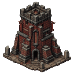
candidate-01/assets/architecture/redstone-oath-tower-hd.png
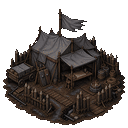
candidate-01/assets/architecture/gray-banner-field-camp-hd.png
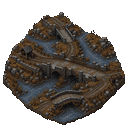
candidate-01/assets/architecture/three-bridges-river-valley-hd.png
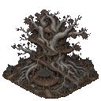
candidate-01/assets/architecture/silverwood-tree-city-hd.png
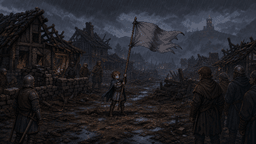
candidate-01/assets/scenes/gray-flag-over-burned-village-hd.png
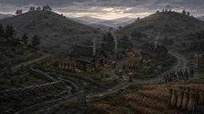
candidate-01/assets/scenes/twin-hills-first-command-hd.png
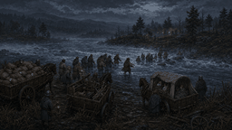
candidate-01/assets/scenes/white-river-night-crossing-hd.png
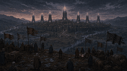
candidate-01/assets/scenes/seven-towers-at-dusk-hd.png
candidate-01/assets/props/story-props-sheet-hd.png
candidate-01/assets/props/campaign-props-sheet-02-hd.png
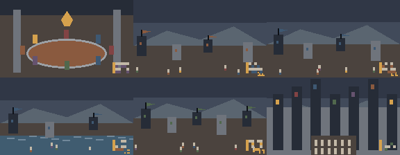
candidate-01/assets/complete/static/style-reference-atlas-v1.png
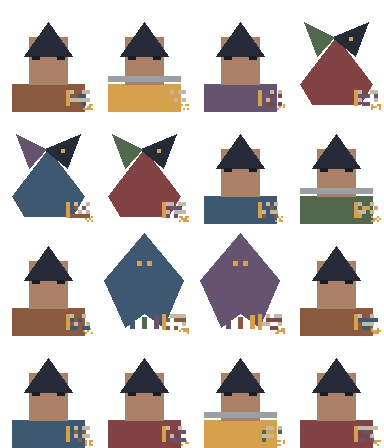
candidate-01/assets/complete/static/character-stage-atlas-v1.png
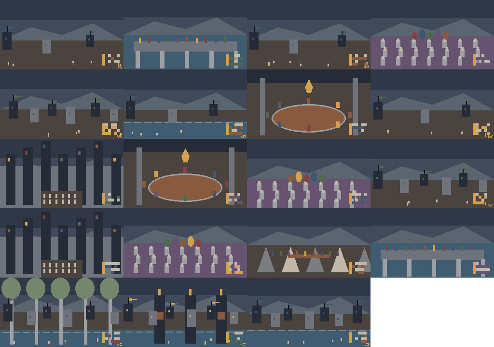
candidate-01/assets/complete/static/story-scene-atlas-v1.png
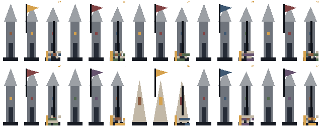
candidate-01/assets/complete/static/architecture-atlas-v1.png
candidate-01/assets/complete/static/narrative-prop-atlas-v1.png
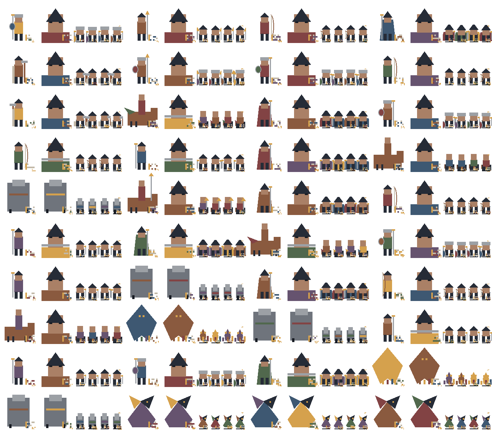
candidate-01/assets/complete/units/combat-unit-package-atlas-v1.png
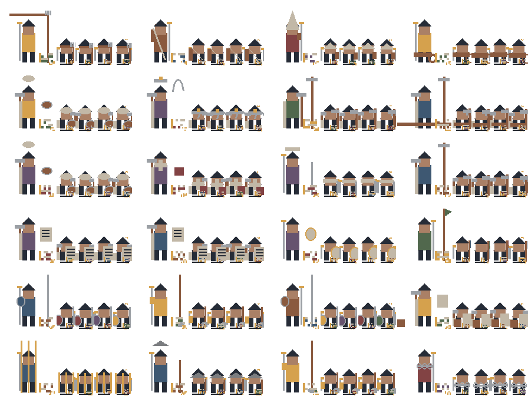
candidate-01/assets/complete/mission-units/mission-unit-package-atlas-v1.png
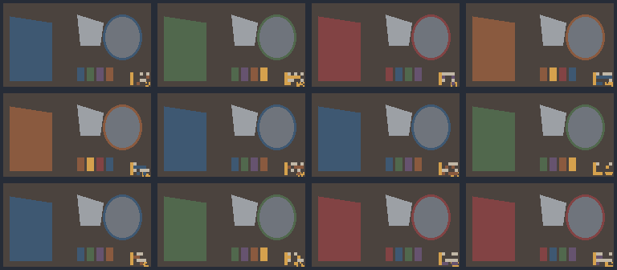
candidate-01/assets/complete/factions/faction-kit-atlas-v1.png
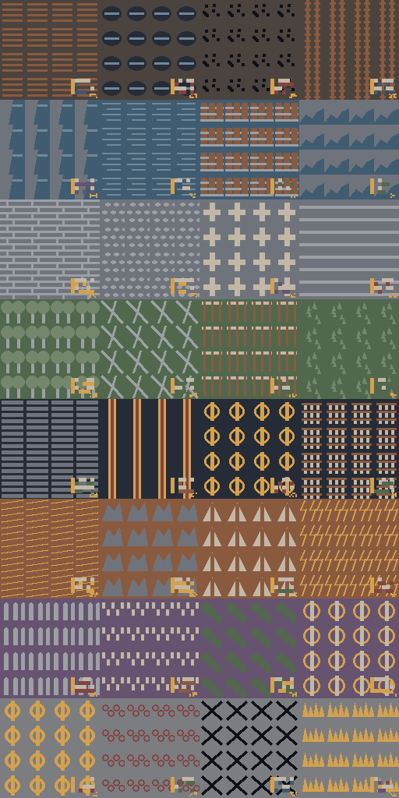
candidate-01/assets/complete/terrain/terrain-group-atlas-v1.png
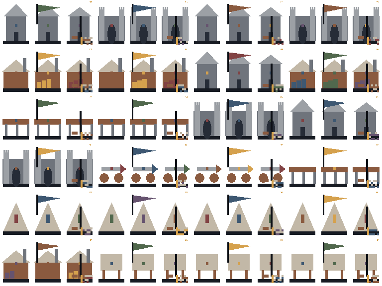
candidate-01/assets/complete/structures/interactive-structure-atlas-v1.png
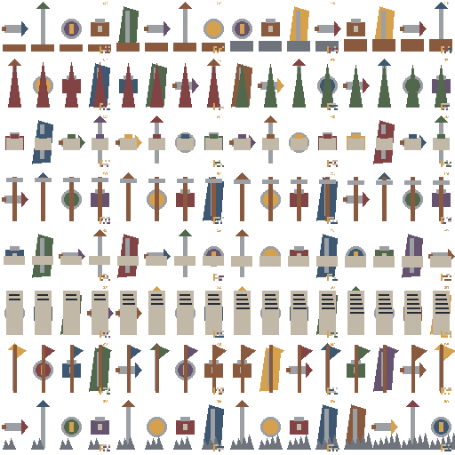
candidate-01/assets/complete/battle-props/battle-prop-atlas-v1.png
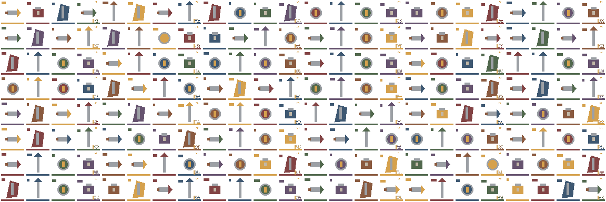
candidate-01/assets/complete/equipment/equipment-atlas-v1.png
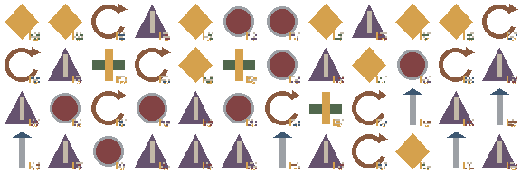
candidate-01/assets/complete/skills/skill-icon-atlas-v1.png
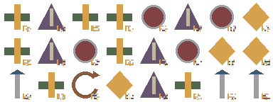
candidate-01/assets/complete/status/status-icon-atlas-v1.png
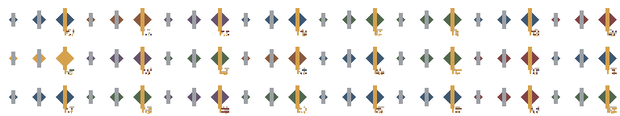
candidate-01/assets/complete/fx/fx-atlas-v1.png
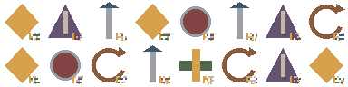
candidate-01/assets/complete/ui/hud-atlas-v1.png
404 题材 · 33 份 PNG
candidate-02/assets/characters/mira-portrait-hd.png
candidate-02/assets/characters/roan-portrait-hd.png
candidate-02/assets/characters/naim-portrait-hd.png
candidate-02/assets/characters/talos-7-portrait-hd.png
candidate-02/assets/characters/helo-portrait-hd.png
candidate-02/assets/characters/iya-portrait-hd.png
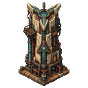
candidate-02/assets/architecture/zero-rain-tower-hd.png
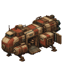
candidate-02/assets/architecture/farlight-cargo-ship-hd.png
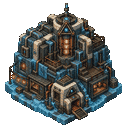
candidate-02/assets/architecture/soler-archive-monastery-hd.png
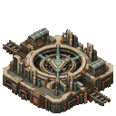
candidate-02/assets/architecture/kairon-ring-node-hd.png
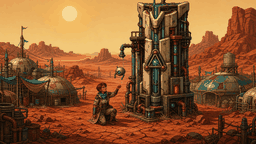
candidate-02/assets/scenes/season-without-rain-hd.png
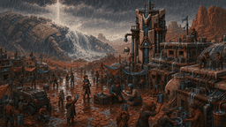
candidate-02/assets/scenes/seven-minute-rain-hd.png
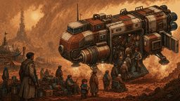
candidate-02/assets/scenes/farlight-departure-hd.png
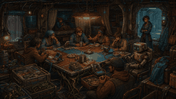
candidate-02/assets/scenes/folding-table-covenant-hd.png
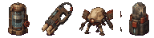
candidate-02/assets/props/story-props-sheet-hd.png
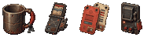
candidate-02/assets/props/campaign-props-sheet-02-hd.png
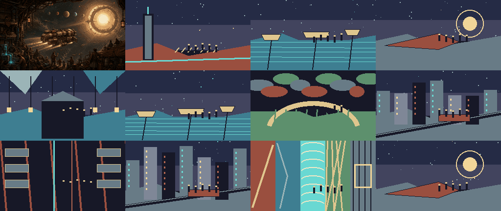
candidate-02/assets/expansion/atlases/c02-style-atlas-complete.png
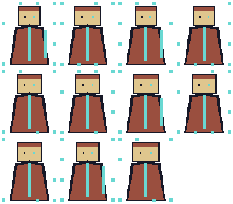
candidate-02/assets/expansion/atlases/c02-character-atlas-expanded.png
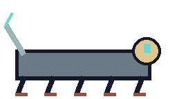
candidate-02/assets/expansion/atlases/c02-creature-atlas-expanded.png
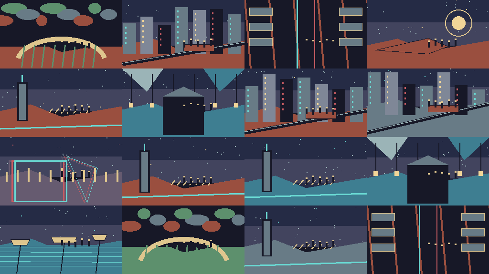
candidate-02/assets/expansion/atlases/c02-scene-atlas-expanded.png
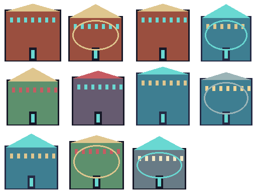
candidate-02/assets/expansion/atlases/c02-architecture-atlas-expanded.png
candidate-02/assets/expansion/atlases/c02-prop-atlas-expanded.png
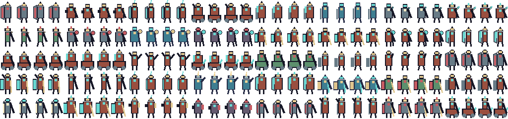
candidate-02/assets/expansion/atlases/c02-combat-unit-atlas-complete.png
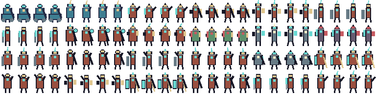
candidate-02/assets/expansion/atlases/c02-mission-unit-atlas-complete.png
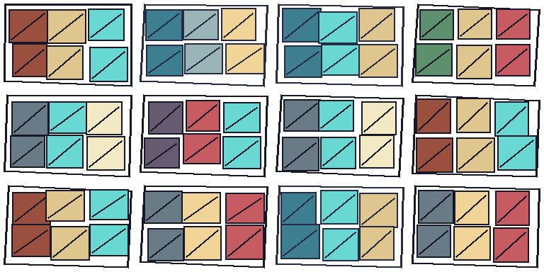
candidate-02/assets/expansion/atlases/c02-faction-kit-atlas-complete.png
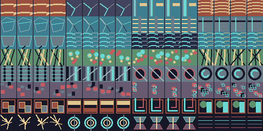
candidate-02/assets/expansion/atlases/c02-terrain-atlas-complete.png
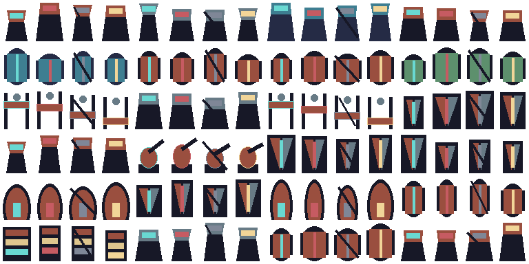
candidate-02/assets/expansion/atlases/c02-interactive-atlas-complete.png
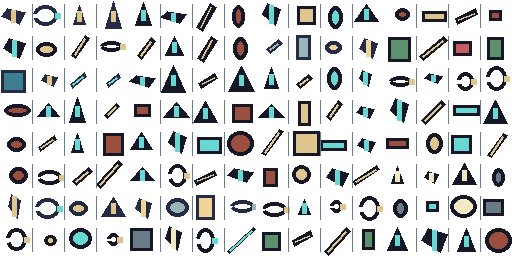
candidate-02/assets/expansion/atlases/c02-battle-prop-atlas-complete.png
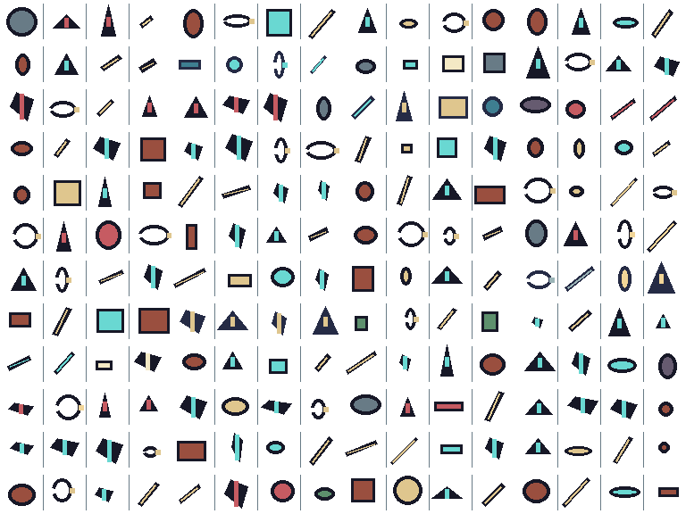
candidate-02/assets/expansion/atlases/c02-equipment-atlas-complete.png
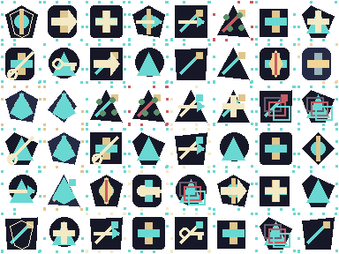
candidate-02/assets/expansion/atlases/c02-skill-atlas-complete.png
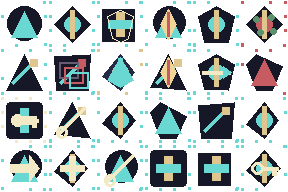
candidate-02/assets/expansion/atlases/c02-status-atlas-complete.png
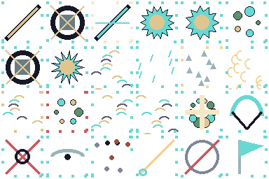
candidate-02/assets/expansion/atlases/c02-fx-atlas-complete.png
candidate-02/assets/expansion/atlases/c02-hud-atlas-complete.png
404 题材 · 33 份 PNG
candidate-03/assets/characters/shen-li-22-portrait-hd.png
candidate-03/assets/characters/lu-qinghe-portrait-hd.png
candidate-03/assets/characters/han-yue-portrait-hd.png
candidate-03/assets/characters/pei-zhao-portrait-hd.png
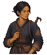
candidate-03/assets/characters/jiang-zhaoye-portrait-hd.png
candidate-03/assets/characters/aletan-portrait-hd.png
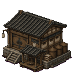
candidate-03/assets/architecture/county-granary-hd.png
candidate-03/assets/architecture/huai-right-bank-dike-hd.png
candidate-03/assets/architecture/linchuan-government-hub-hd.png
candidate-03/assets/architecture/great-lake-mixed-fleet-hd.png
candidate-03/assets/scenes/opening-the-county-granary-hd.png
candidate-03/assets/scenes/rain-night-crossing-hd.png
candidate-03/assets/scenes/great-lake-precision-fire-attack-hd.png
candidate-03/assets/scenes/one-bowl-of-new-grain-hd.png
candidate-03/assets/expanded/narrative/c03-prop-light-rework-atlas.png
candidate-03/assets/props/story-props-sheet-hd.png
candidate-03/assets/props/campaign-props-sheet-02-hd.png
candidate-03/assets/expanded/narrative/c03-style-atlas-01.png
candidate-03/assets/expanded/narrative/c03-character-stage-atlas-01.png
candidate-03/assets/expanded/narrative/c03-scene-atlas-01.png
candidate-03/assets/expanded/narrative/c03-architecture-atlas-01.png
candidate-03/assets/expanded/narrative/c03-narrative-prop-atlas-01.png
candidate-03/assets/expanded/units/c03-combat-unit-atlas-01.png
candidate-03/assets/expanded/units/c03-mission-unit-atlas-01.png
candidate-03/assets/expanded/systems/c03-faction-kit-atlas-01.png
candidate-03/assets/expanded/systems/c03-terrain-atlas-01.png
candidate-03/assets/expanded/systems/c03-interactive-structure-atlas-01.png
candidate-03/assets/expanded/systems/c03-battle-prop-atlas-01.png
candidate-03/assets/expanded/systems/c03-equipment-atlas-01.png
candidate-03/assets/expanded/ui/c03-skill-atlas-01.png
candidate-03/assets/expanded/ui/c03-status-atlas-01.png
candidate-03/assets/expanded/fx/c03-fx-atlas-01.png
candidate-03/assets/expanded/ui/c03-hud-atlas-01.png
没有符合当前筛选条件的素材。